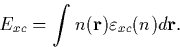

The local density approximation (LDA) states that, for regions of a material where the charge density is slowly varying, the exchange correlation energy at that point can be considered the same as that for a locally uniform electron gas of the same charge density (see Figure 2.1). In this case we can write Exc as

The spin polarised variation (local spin density approximation, or LSDA) replaces the spin averaged energy density in the above equation with the energy density for a polarised homogeneous electron gas.
Although this approximation is extremely simple, it is surprisingly accurate, and forms the core of most modern DFT codes. It even works reasonably well in systems where the charge density is rapidly varying. However it tends to underpredict atomic ground state energies and ionisation energies, while overpredicting binding energies. It is also known to overly favour high spin state structures. For these reasons there have been attempts to move beyond the LDA, notably through the addition of gradient corrections to incorporate longer range gradient effects [19]. However in practise, although these improvements seem to give better total energies the resultant structure is often worse, and at a greatly increased computational cost. In general, the LDA is worse for small molecules and improves with system size.
The only remaining problem is to find an approximate solution for the
homogeneous electron gas exchange-correlation term,  .There are several parameterised prescriptions for this, the one used
in AIMPRO is based on the work by Ceperley and Alder [20].
.There are several parameterised prescriptions for this, the one used
in AIMPRO is based on the work by Ceperley and Alder [20].